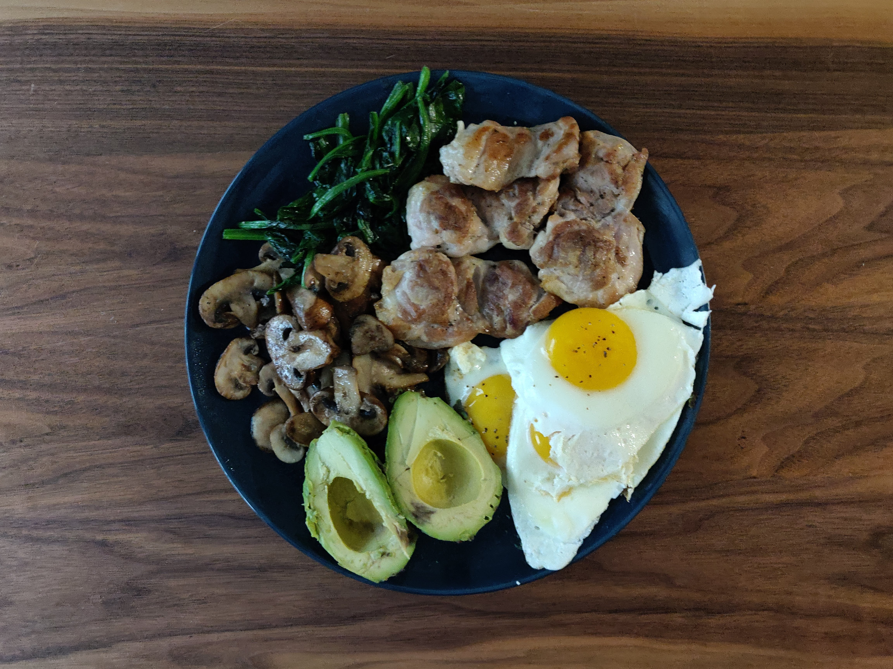
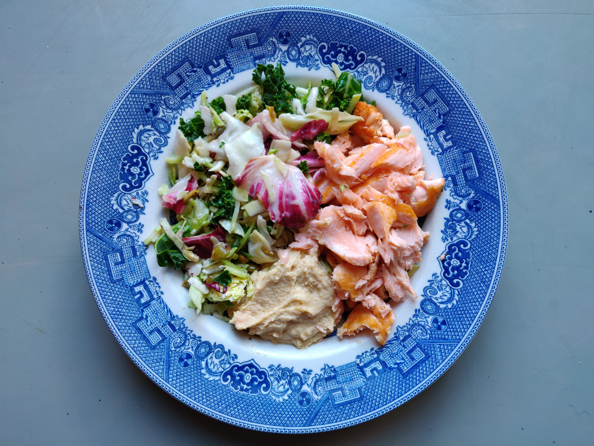
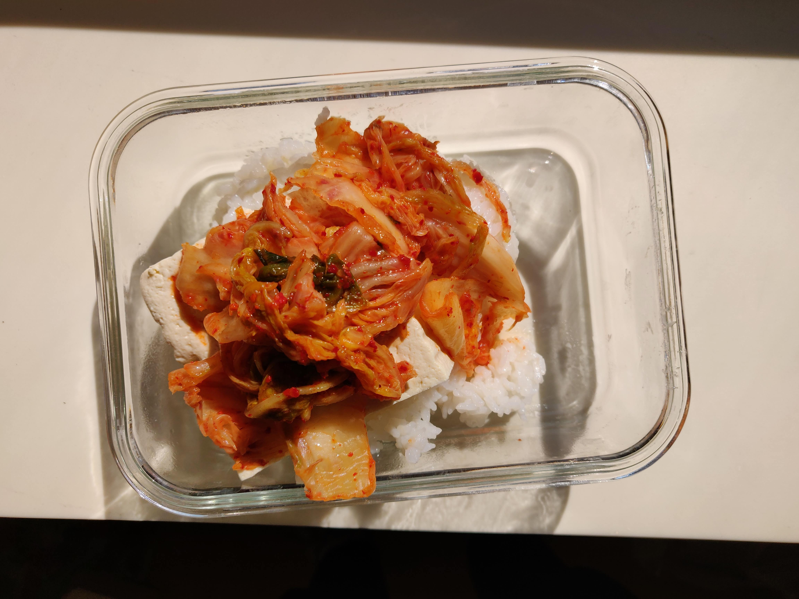

Hobbies
These are the activities that I typically spend my time doing outside of learning, entertainment, and spending time with others.
Film
Although there’s plenty room for creativity in technical work, it’s a particularly unique experience to create something artistic of your own. With film having such an influence throughout my life, it’s been the craft that I’ve been wanting to work on the most. Although I haven’t done much yet, I have a great appreciation for shows and movies, and on occasion I’ll throw together some of my own shots. It is a bit of a pipe dream of mine to one day spend a period of my life working as a writer or director on a movie or series.
Nutrition/Cooking



I have no better general advice for my past self and the majority of people than to just hit the fundamentals of sleep, exercise, and nutrition. Cooking is not only a fun pasttime you can enjoy with others, but an interesting skill and powerful tool.
I’ve been interested in nutrition for quite a while, and have recently been looking into more anthropological evidence for nutrition while experimenting with keto + one meal a day. I generally am not too restrictive, but instead follow the themes of a certain diet. My first priority is to enjoy good food, but still trying to pay attention to what’s best for my health and longevity down the line.
Exercise
I used to be a gymnast up until high school, and although I don’t go quite as hard these days, I do enjoy all sorts of exercise, from weightlifting, calisthenics, biking, athletics, or even just walking around. Most importantly, I just like to break up my modern-day sedentary lifestyle with a bit of activity in each day. Exercise is one of the greatest forms of stress-relief, and promotes biological enhancements in almost every facet of your body (especially your brain!). It helps me reset, it helps me focus, and it helps me live longer and feel better. I genuinely cannot think of a more fundamental way to improve life.